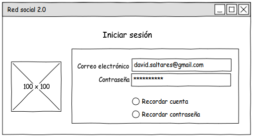
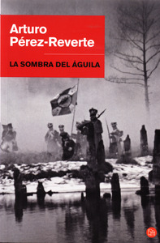

Aug 2, 2010 · 1 minute read · Comments
Games development

Mientras trabajamos en Granny’s Bloodbath se nos ocurrió la idea de hacer un port a PSP del juego. Fui el encargado de la tarea y, cuando me puse manos la obra, descubrí que la documentación era pobre y en la mayoría de casos errónea. Lo cierto es que fue toda una aventura descubrir cómo crear un juego para PSP en C++ usando SDL y otras librerías sin cambiar el código original.
Debido a la dificultad que me supuso, redacté una guía en PDF bajo Creative Commons y la publiqué en el repositorio del proyecto. Recibí consejos por parte de mis compañeros para publicarla en algún lugar donde pudiera tener más difusión, por ejemplo Wikilibros. Después de bastante tiempo les he hecho caso y, tras superar los entresijos de las reglas de nombrado de páginas, la guía ya está alojada allí. Podéis acceder a ella desde aquí.
Sería estupendo si le sirviera a alguien para crear algún proyecto en PSP.
Aug 1, 2010 · 2 minute read · Comments
Games development
A la hora de desarrollar software es muy importante diseñar correctamente la interfaz, no importa si es una web o una aplicación de escritorio. Antes de lanzarnos a programar como posesos, durante el análisis y el diseño es altamente recomendable realizar bocetos o esquemas de las pantallas con las que contará la aplicación así como la forma de interactuar con las mismas. Para ello nos podemos ayudar de alguna herramienta para crear bocetos de interfaces de usuario (mockups o sketching).
Pencil Project es la alternativa libre (GPL v2) y multiplataforma para realizar esta tarea. Es una simple extensión de Firefox pero cuenta con una potencia y flexibilidad considerables. Nos permite crear proyectos con varias pantallas, en las cuales es posible añadir cualquier elemento de una GUI típica (botones, tablas, cajas de activación, deslizadores…). No sólo será útil para aplicaciones de escritorio sino que cuenta con multitud de elementos web. Una de sus características más importantes es la capacidad de alinear objetos para que el conjunto quede ordenado.

Los proyectos se guardan en XML aunque podemos exportar nuestros diseños a otros formatos como: PNG, PDF, ODT o HTML eligiendo entre varias plantillas disponibles. La curva de aprendizaje es prácticamente nula y resulta completamente intuitivo. Se trabaja de manera rápida y ayuda mucho a despejar las ideas sobre la interfaz del software a desarrollar. Una excelente alternativa a herramientas privativas como Balsamiq Mockups.
Jul 28, 2010 · 2 minute read · Comments
Hobbies
Green Zone es una película que, para mí, pasó desapercibida durante su proyección en salas pero finalmente me he decidido a verla. Basada en la novela “Vida imperial en la ciudad Esmeralda” con un guión escrito por Brian Helgeland y dirigida por Paul Greengrass. ¿Qué me ha impulsado a verla? Una tarde por delante y pocas ganas de digerir una película compleja. Finalmente es lo que, en cierto modo, he obtenido.
El oficial americano Roy Miller (Matt Damon) dirige a su unidad en misiones de búsqueda de las tan cacareadas armas de destrucción masiva en la guerra de Irak. Ninguna de las indicaciones que recibe de inteligencia da sus frutos hasta que se ve abordado por un civil que le ofrece información. Inicia así, la búsqueda de un general iraquí, Al-Rawi, sospechoso de conocer el paradero de dichas armas. Las teorías de la conspiración brotan de todas partes y Miller pronto empieza a cuestionar los fundamentos de la guerra en Irak.
No me extraña en absoluto que la película haya dividido a la crítica, sobre todo a la americana ya que muestra a los altos cargos del Gobierno desde el prisma de la corrupción. No pienso meterme en el barrizal que puede ser discutir sobre la guerra de Irak pero comprendo perfectamente que este largometraje levante ampollas. En cualquier caso, se está abordando un tema extremadamente reciente en favor de la espectacularidad. Lo correcto es aguardar cierto tiempo si se desea mostrar una perspectiva rigurosa, al menos eso es lo que diría cualquier historiador.
La película no deja de ser un intento de mezclar la acción de forma épica y espectacular con la crítica hacia el drama de Irak. Un cóctel que no acaba de funcionar acertadamente. Matt Damon es un actor correcto, ha funcionado bien en la trilogía Bourne. No obstante, desde mi punto de vista no consigue dotar al conjunto del dramatismo que se merece. El ritmo es correcto y logra entretener, que no es poco. Por lo demás tendremos tiroteos, asaltos y explosiones en la forma en la que estamos acostumbrados en el cine bélico palomitero.
Podéis imaginaros el resto.
Jul 26, 2010 · 1 minute read · Comments
Computing
Usar en todas las webs y servicios en los que tengamos una cuenta la misma contraseña es altamente peligroso. Lo ideal sería utilizar contraseñas largas, que combinasen caracteres alfanuméricos con diversos símbolos. Entonces es cuando surge el dilema, ¿cómo me voy a acordar de todo?
La necesidad de utilizar un gestor de contraseñas se hace evidente y KeePassX cumple bien su función. Se trata de un software en el que podemos almacenar todas nuestras contraseñas de manera segura, protegidas por una clave maestra y un fichero encriptado. Definimos entradas para cada servicio a los que asociamos una URL, un usuario y una contraseña entre otros metadatos. Cuenta con multitud de funcionalidades útiles como copiado de contraseña al portapapeles.
KeePassX es software libre (licencia GPL) y existen versiones para Windows, GNU/Linux y Mac. En el caso de sistemas Linux la instalación es tremendamente sencilla ya que se encuentra en los repositorios y, si tenemos una distribución basada en Debian basta:
sudo apt-get install keepassx
Jul 25, 2010 · 2 minute read · Comments
Hobbies

“La sombra del águila”, una novela bélica escrita por Arturo Pérez-Reverte en 1993. Hacía, quizás, demasiado tiempo que no leía un libro y esta breve narración me ha venido de maravilla para recuperar el gusanillo.
1812, Napoleón y sus consejeros vigilan la batalla de Sbodonovo desde una colina durante la invasión a Rusia. Su flanco derecho estaba siendo arrasado cuando, a través del catalejo se divisa al batallón 326 de infantería. Contra todo pronóstico, los soldados que lo forman, avanzan impasibles hacia el fuego de los cañones rusos. Precisamente ese batallón estaba formado por prisioneros españoles y habían sido forzados a luchar. "¡Son unos valientes!" “¡Son unos auténticos hijos de Francia!" Al menos eso es lo que pensó “Le Petit Cabrón” por lo que mandó una carga de caballería para apoyarlos. Lo que Napoleón no sabía es que los españoles no estaban, en absoluto, emprendiendo una acción heroica, estaban desertando.
Una tarde y parte de una mañana me llevó la lectura de esta pequeña novela basada en hechos reales, una fantástica recreación de una batalla napoleónica llena del humor irónico y satírico que caracteriza a Perez-Reverte. A veces resulta escalofriante reír durante la lectura de un par de párrafos para después estremecerse por la crudeza de la guerra y el invierno rusos.
Mis queridos tovarisch, estamos ante una lectura obligada.